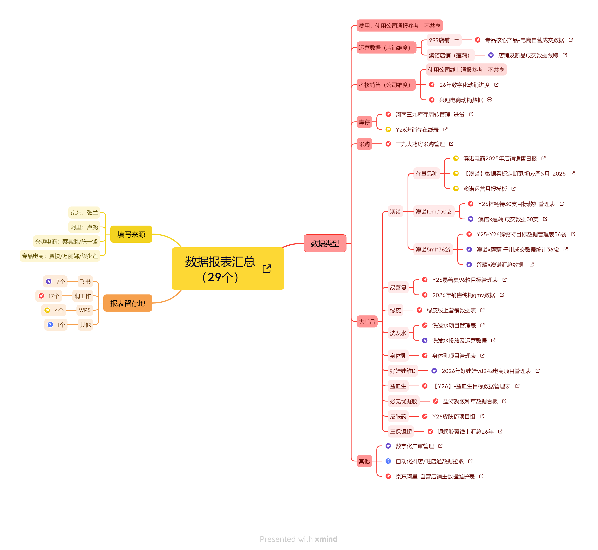
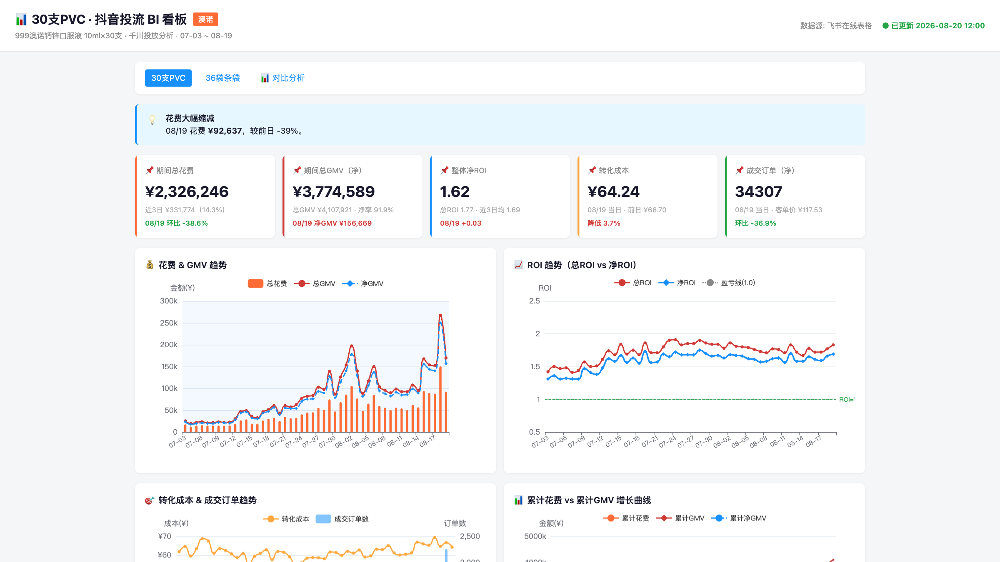
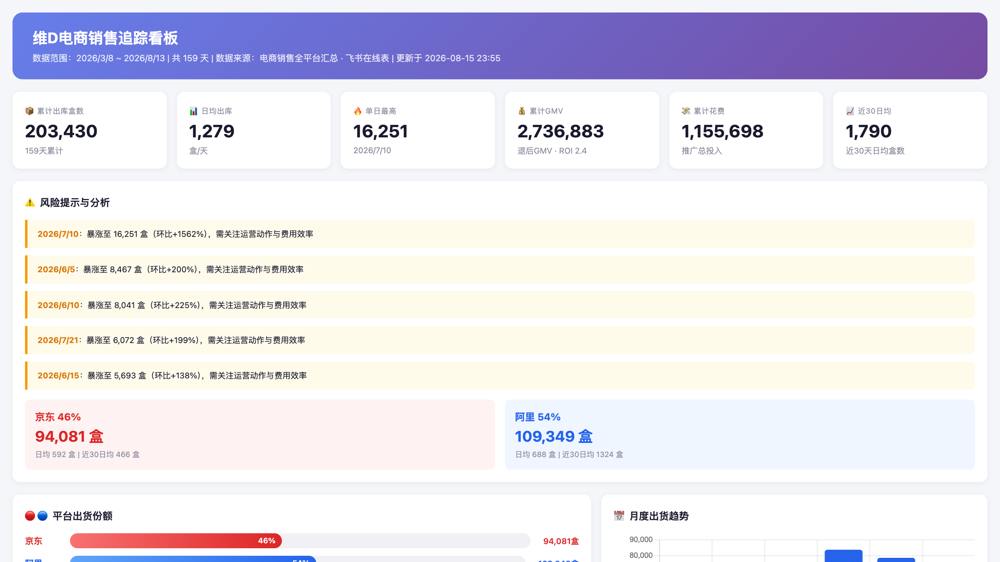
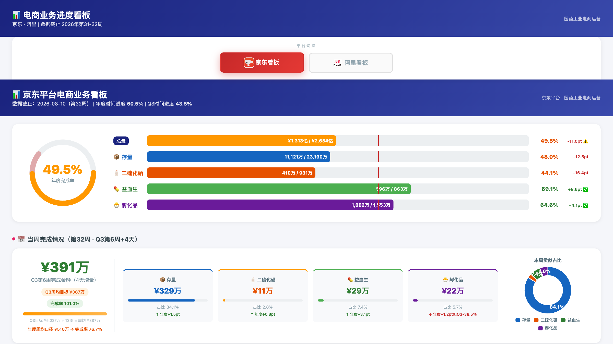
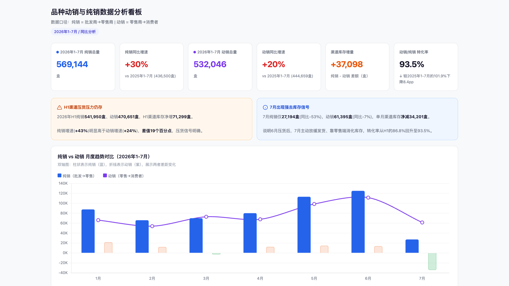
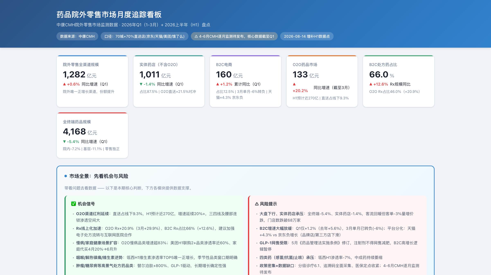

华润之道 · 第23期 · 个人行动学习课题
AI赋能业务
AI赋能电商运营
数据分析及运营管理
从人工数据汇总到自动化智能看板的项目实践与复盘
CONTENTS
汇报内容
从立项初衷到落地复盘,完整呈现两个月的实践路径
01课题背景与目标
- 电商业务高速增长带来的运营压力
- AI赋能的核心思路与课题目标
- 课题覆盖的业务范围与团队分工
02三大痛点精准识别
- 多平台数据汇总耗时长
- 竞品监控与市场洞察滞后
- 运营内容产出效率低下
03应用展示与价值分析
- 代表性看板系统逐一展示
- 效率、决策、复制三维价值
- 从工具到方法论的沉淀
01 · 研究背景
从「人力密集」走向「数据智能驱动」
线上B2C业务高速扩张,但传统人工运营模式已触及效率天花板
电商团队规模
28人
货架电商 24-25 / 兴趣电商 3-4
覆盖核心品类
5个
呼吸 · 肠胃 · 皮肤 · 骨健康 · 维矿
主要B2B渠道
2+家
京东健康 · 阿里健康 + 自有旗舰店
每日数据指标项
数十项
GMV · 订单 · 转化 · ROI · 费率
核心矛盾:
业务规模扩大 + 平台规则日趋复杂 →
传统人工模式在数据汇总、竞品监控、内容产出三大环节高度依赖经验判断,
缺乏数据驱动的系统化决策支撑。AI/LLM的快速发展,为电商运营智能化转型提供了前所未有的机遇。
02 · 业务痛点
精准识别 · 三大核心痛点
从一线实际工作中抽象出的、阻碍效率与经营效益提升的关键瓶颈
①多平台数据汇总耗时长
京东商智 · 阿里生意参谋 · 抖音罗盘,数据专员每日需花费 2-3小时 手动导出、清洗、制表。
- 数据专员日均有效产出仅1份日报
- 深度分析报告需要1-2天
- 各平台口径不一,跨平台对比难
- 停留在"记录数据",难以"分析数据"
②竞品监控响应滞后
当前覆盖 3-5个核心竞品,更新频率仅周度甚至月度,大促期间反应严重滞后。
- 2025年"618"呼吸品类损失约2天搜索流量
- 依赖运营人员手动浏览记录
- 评价舆情、促销策略跟踪盲区大
- 错失最佳应对窗口期
③内容产出效率低
商品详情页、推广素材、直播脚本需多平台适配,人工产出周期 1-2天/篇。
- 多平台高频上新节奏难以满足
- 医药OTC合规要求,通用模型易"踩雷"
- 大促期间素材迭代压力倍增
- 人力成本与产出效率难以平衡
03 · 整体方案
AI赋能电商运营的「三横一纵」架构
横向打通数据采集、竞品监控、内容生成,纵向串联运营全链路决策
A数据采集自动化
多平台数据 → 自动归一 → 看板自动渲染,日报生成从2-3小时压缩至15分钟。
B竞品监控智能化
价格、促销、评价、舆情实时扫描,小时级预警,大促期间自动触发应对建议。
C内容生成专业化
详情页文案、推广素材、直播脚本,内置医药合规知识库,确保合规可用。
DWorkBuddy · 数据底座与可视化中台
私有化部署保障数据合规 · 飞书电子表格/Wiki/多维表格统一接入 · 看板模板沉淀 · 一键部署到 GitHub Pages · 飞书机器人定时推送日报。
E运营决策闭环
看板 → 异常定位 → AI归因 → 推送一线 → 行动回流,形成"看数据→做决策→看效果"的飞轮。
04 · 数据前置 · 看板之前的"地基工程"
数据梳理与清洗 · 从29张报表到统一底座
在启动所有看板制作之前,第一步是把数据做好梳理与筛选 · 把各种数据源做好清洗与规则制定
数据报表总数
29 张
散落于京东/阿里/兴趣/专项四源
填写来源
4 类平台
京东 · 阿里 · 兴趣电商 · 专项电商
报表留用地
17+7+4+1
润工作 17 · 飞书 7 · WPS 4 · 其他 1
数据类型
6 + 大类
运营 · 考核 · 库存 · 采购 · 澳诺 · 大单品
数据报表汇总 · 29 张 · 思维导图

①清洗与规则要点
脑图右侧已按 6 大类业务域 完成 29 张报表的清洗归一,关键规则如下:
- 经营数据(店铺维度): 使用公司通报参考,不共享。999 店铺 · 澳诺店铺(莲藕)
- 考核数据(公司维度): 使用公司线上通报参考,不共享。26 年数字化动销 · 兴趣电商动销
- 澳诺 9 张: 存量 3 / 30支 2 / 36袋 3 / 汇总 1,为抖音投流看板主战场
- 大单品 11 张: 覆盖 9 个重点品种项目表(易善复 · 绿皮卡 · 洗发水 · 身体乳 · 好娃娃维D · 益血生 · 必无忧 · 皮肤药 · 三倍银翘)
- 其他 3 张: 数字化二审 · 自动化数据拉取 · 自营店全数据维表(横向支撑)
🔒
对外共享口径: 严格区分 · 数据底座为唯一可信源
04 · 应用展示 · 旗舰项目
澳诺 · 抖音投流 BI 看板
端到端自动化数据管道 · 每日12:00自动更新 · 飞书机器人推送日报
沙部署 GitHub Pages · joez0216.github.io/aonuo-dashboard

数据范围 30支PVC + 36袋条袋双 SKU · 7月3日 — 8月19日 · 飞书在线表格
自动更新
日报推送
双 SKU 对比
异常预警
04 · 应用展示
维D · 电商销售追踪看板
京东/阿里双平台日维度自动汇总 · 风险提示前置 · 月度出货趋势一目了然
15天累计 203,430 出库盒 · 近30日GMV 274万

数据源 电商销售全平台汇总 · 飞书在线表 · 数据更新于2026-08-15
风险提示
平台份额对比
月度趋势
自动化归一
04 · 应用展示
电商业务进度看板 · 京东/阿里双平台
品类完成率与周达成双维度可视化 · 风险品类红黄绿三色高亮
数据截止 2026年第31-32周 · 年达成率 60.5%

覆盖品类 益盛 · 存量 · 二硫化硒 · 益血生 · 孵化品 · Q3周完成 ¥391万
红黄绿三色
同环比
本周贡献占比
Tab切换
04 · 应用展示
易善复 · 销售数据 + 药品院外零售市场看板
动销/纯销双口径拆解 · 院外零售市场全景监测与机会风险预警
① 品种动销与纯销数据分析看板
2026年1-7月 · 纯销 vs 动销

② 药品院外零售市场月度追踪看板
CMH · 2026上半年H1盘点

05 · 价值分析
从「工具」到「价值」的三层跃迁
不止是看板好看,而是真的改写了运营决策的工作方式
⚡
效率层 · 把人从重复劳动里解放出来
数据专员日均节省2小时以上,日报/周报/月报全自动产出,大促期间人力无需扩编。
◎
决策层 · 让判断从「经验」走向「数据」
红黄绿三色 + 同比环比 + TOP榜 + 风险诊断,老板3秒看到结论,一线秒级定位异常。
⌘
复制层 · 工具集可平移到其他品类/团队
看板模板 + 提示词库 + 操作手册三件套,新成员上手周期从2周缩短至2天。
「看板不是终点,而是 AI 协同工作流的起点。」
我们把原本散落在京东商智、阿里生意参谋、抖音罗盘、各类 Excel 里的数据,
通过飞书在线表格 + WorkBuddy 自动化管道,归一汇入可视化看板;
再由 AI 助理承担"看数据 → 写结论 → 推动作业"的中间环节,
让一线运营人员专注于真正需要创造力的判断与执行。
覆盖品类: 呼吸 · 肠胃 · 皮肤 · 维矿 · 骨健康
覆盖平台: 京东 · 阿里 · 抖音 · 自有旗舰店
06 · 复盘与后续
复盘沉淀 + 后续路线图
计划差距 · 风险 · 机会洞察 一个都不能少 · 2026下半年向方法论与工具集升级
计划差距复盘
- 超出预期: 看板迭代从「周」提速到「日」,澳诺投流看板每日12:00稳定自动推送。
- 超出预期: 已落地6+看板,覆盖SKU投流/全平台追踪/品类进度/动销纯销/院外市场。
- 未达预期: 竞品监控仍以人工浏览补充,实时预警系统尚在原型阶段。
- 未达预期: AI内容生成未在详情页/直播脚本全合规跑通,仍需人工二审。
风险复盘
- 已暴露 · 数据安全: 销售/预算数据走私有化+合规云,无外发,目前可控。
- 已暴露 · 模型幻觉: 通用模型对OTC医药合规理解不足,已通过提示词约束+人工二审缓解。
- 未解决 · 习惯转变: 一线对 AI 工具有「怕出错」心理,需培训+激励机制持续推动。
- 未解决 · 跨平台口径: 京东/阿里/抖音指标定义差异,自动归一规则仍需人工兜底。
机会洞察复盘
- 可复用打法: 飞书表→自动化脚本→看板→机器人推送 端到端管道,可推广全集团。
- 新增长点: 大促期间用看板实时盯盘,投放策略调整从「天级」缩短至「小时级」。
- 改进建议: 沉淀「医药电商提示词库」,把单点经验变成团队资产。
- 后续动作: 推广至骨健康/维矿品类与抖音兴趣电商,形成横向复制。
后续路线 · 从「单点工具」到「方法论与工具集」的复制推广
① 第一阶段 · 已完成
2026.6 — 2026.7
澳诺看板每日12:00自动推送 · 多平台数据管道搭建 · 维D/进度/易善复陆续上线 · 基于反馈迭代筛选条件
▶
② 第二阶段 · 进行中
2026.8 — 2026.9
呼吸/肠胃2品类京东/天猫试点 · 验证数据自动采集准确率 · 竞品监控覆盖与时效性测试 · AI内容生成转化跟踪
▶
③ 第三阶段 · 待启动
2026.10 — 2026.11
输出《AI赋能电商运营操作手册》 · 沉淀提示词模板库(详情页/素材/脚本) · 推广至骨健康/维矿/抖音兴趣电商
谢谢聆听
AI不是替代运营,而是把运营从「数据搬运工」解放为「决策指挥官」
华润三九 · 智能与数字化中心 · 周俊 · 2026.08